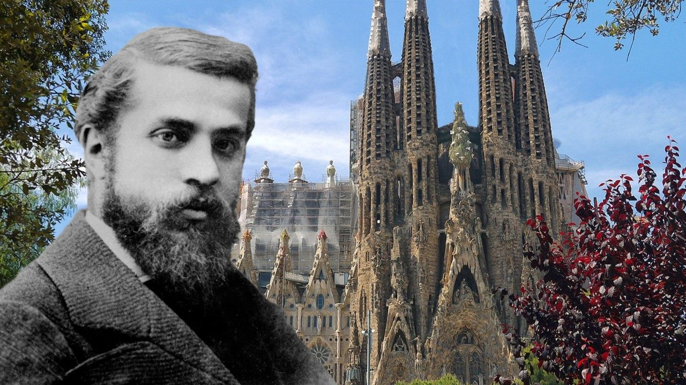

Dnes TOP, na který už se dlouho těším
Papež Lev XIV. přiletí do Španělska. Papež Lev XIV. je podle mě frajer, o to víc mě to přijde zajímavý.
Co se tedy chystá:
Cesta papeže Lva XIV. do Španělska
Oficiální program: 6.–12. června 2026.
Trasa: Řím → Madrid → Barcelona/Montserrat → Gran Canaria → Tenerife → Řím.
V Barceloně bude papež 9.–11. června, hlavní okamžik nastane 10. června v 19:30 v Sagradě Famílii, kde odslouží mši a inauguruje / požehná věž Ježíše Krista.
Program v Barceloně:
- 9. 6. — 12:25 přílet na El Prat, 13:00 modlitba v katedrále sv. Eulálie, 20:00 vigilie na Olympijském stadionu Lluís Companys.
- 10. 6. — 10:50 věznice Brians 1, 12:00 růženec na Montserratu, 16:30 charitní organizace v kostele Sant Agustí, 19:30 mše v Sagradě Famílii a inaugurace věže.
Účast: u Sagrady se počítá asi s 8 000 lidmi: zhruba 4 000 uvnitř a 4 000 venku před fasádou Zrození; 4 200 vstupenek má jít věřícím z barcelonských farností. Přítomni mají být králové, Pedro Sánchez, Salvador Illa, církevní představitelé a až 1 600 novinářů.
Bezpečnost a peníze
Barcelona chystá mimořádný bezpečnostní režim: 5 600 Mossos d'Esquadra + 500 Guardia Urbana, tedy přes 6 000 policistů. Okolí Sagrady má mít devět bloků s maximálním bezpečnostním režimem, kontroly rezidentů, uzavírky, posílenou MHD, uzavření stanice metra Sagrada Família, velkoplošné obrazovky na Glòries a Arc de Triomf a zdravotní zázemí v nemocnici Sant Pau.
Náklady: pro Barcelonu se uvádí 1,6 mil. € z turistické taxy. Celý španělský pobyt se v médiích odhaduje různě: minimálně 15 mil. €, jinde až 25 mil. €, přičemž veřejné peníze mají tvořit asi 20 %.
Přínos: odhady ekonomického dopadu se pohybují zhruba mezi 90–125 mil. €, novější mediální odhad mluví až o 150 mil. €. To zahrnuje hotely, dopravu, gastronomii, média, bezpečnostní a produkční služby.
Proč papež přijíždí
Není to „jen kvůli Sagradě", ale Sagrada je symbolické srdce celé cesty. Oficiálně jde o cestu do Madridu, Barcelony a na Kanárské ostrovy, s důrazem na víru, kulturu, mladé, chudé, vězně a migranty. V Barceloně se ale vše koncentruje do výjimečného okamžiku: 100 let od smrti Antoniho Gaudího – 10. června 1926 – a dokončení nejvyšší věže chrámu.
Gaudí je pro církev důležitý: papež František ho v roce 2025 prohlásil za ctihodného, což znamená oficiální uznání jeho „hrdinských ctností" a krok směrem k možnému blahořečení.
Jaká Sagrada na papeže čeká
Na papeže čeká Sagrada, která po 144 letech stavby dosáhla svého vrcholu: věž Ježíše Krista má 172,5 m a po instalaci horní části kříže 20. února 2026 je nejvyšším bodem baziliky. Vnitřní práce na věži mají pokračovat ještě v letech 2027–2028. Je to nejvyšší člověkem vytvořená stavba v Barceloně. To je důležité – už v Gaudího časech totiž platilo, že nejvyšším bodem města je a bude kopec Montjuïck (výška 177 m). Tak to Gaudí naplánoval a tak to bylo postaveno. A všechno ostatní v Barceloně je (a bude) nižší.
Bazilika je dnes nejen chrám, ale globální fenomén: v roce 2025 měla podle aktuálních španělských údajů 4,8 mil. prodaných vstupenek, příjmy 134 mil. €, z toho 113 mil. € šlo na stavbu.
Barcelona se 10. června 2026 stane jevištěm, kde se potká smrt a nesmrtelnost. Sto let po smrti podivínského architekta, kterého srazila tramvaj a kterého si spletli s chudákem, se nad městem rozsvítí jeho nejodvážnější sen. Gaudí zemřel jako chudý, nepoznaný muž. Vrací se jako člověk, kvůli němuž přijíždí papež, králové, politici, biskupové, média a tisíce poutníků.
